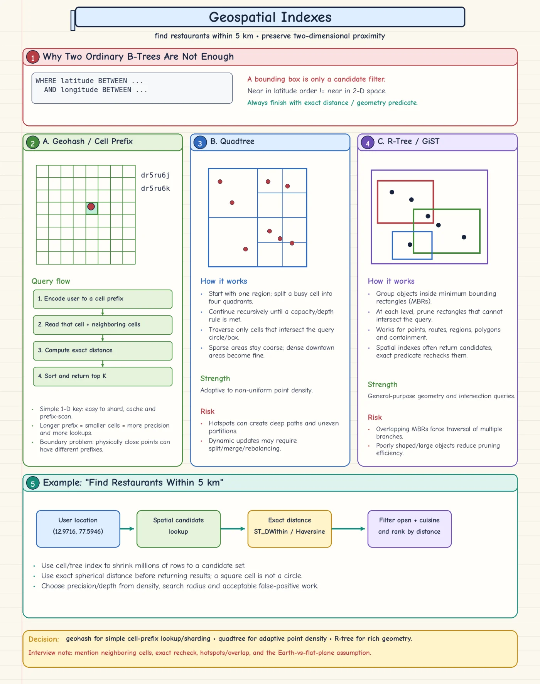

Topic · Database Indexing
Geospatial Indexes
Preserve two-dimensional locality to find nearby things - then always confirm with an exact distance check.


Quick Revision
- Separate lat/lon indexes don't preserve 2D proximity; a box is not a radius.
- Flow: spatial candidate search → exact distance → business filters → rank + limit.
- Geohash - sortable cell prefix; query the cell and neighbours.
- Quadtree - splits dense areas; adapts to uneven density.
- R-tree/GiST - bounding rectangles for any geometry; overlaps hurt pruning.
Approaches
- Geohash - encodes lat/lon into one hierarchical string; nearby points often share a prefix (
dr5ru6j,dr5ru6k). Easy prefix queries, sharding, caching by cell. Costs: boundaries, fixed grid, precision trade-off, poles/longitude wrap. - Quadtree - recursively splits a region into four; busy cells split further. Good for uneven density, radius candidates, maps. Costs: deep hotspot branches, rebalancing, skewed distributed ownership. (PostgreSQL SP-GiST can model it.)
- R-tree / GiST - groups points, lines, polygons by minimum bounding rectangles; prunes non-intersecting branches. Supports containment, overlap, nearest-neighbour (PostGIS). Costs: overlapping MBRs, large/irregular shapes, exact recheck.
- Earth vs plane - Cartesian, spherical, ellipsoidal, or road travel time? It changes type, operator, correctness, and speed. State it.
Trade-offs
| Choice | Benefit | Cost / risk |
|---|---|---|
| Geohash | Simple sortable prefix; easy sharding/cache cells | Boundary and fixed-grid precision problems |
| Quadtree | Adapts to point density | Deep/skewed trees, distributed rebalancing |
| R-tree / GiST | Rich geometry, intersection, containment, kNN | Overlapping boxes reduce pruning; exact recheck |
Failure modes
- Geohash misses nearby records - only the current cell queried → include neighbours + exact distance.
- Geohash reads too many candidates - precision too coarse → finer cells or adaptive structure.
- Quadtree hot/deep branch - extreme density → cap depth, capacity-aware splits, shard hot cells.
- R-tree visits many branches - heavy MBR overlap → better partitioning or operator; expect exact filtering.
Interview practice
Answer aloud, then reveal.
Which spatial index for "restaurants within 5 km"?
Geohash for simple cell routing/sharding, quadtree for very uneven density, R-tree/GiST for rich geometry and kNN. Always finish with an exact geographic distance predicate.
Why aren't two B-tree indexes on latitude and longitude enough?
Two 1D orders don't preserve 2D proximity; they give a rectangular candidate set, not a radius, and miss boundary effects.